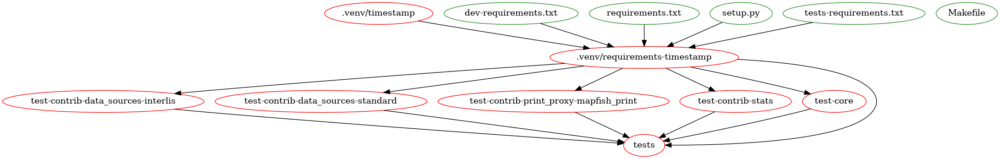
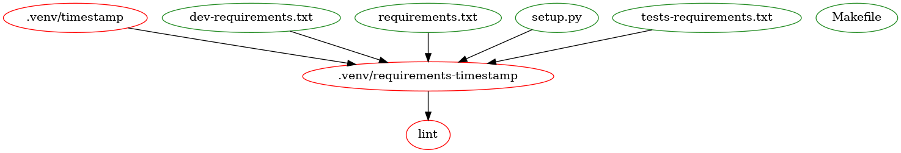
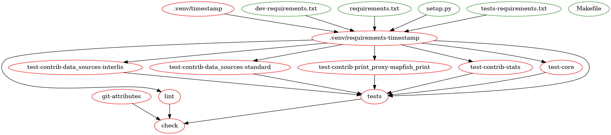
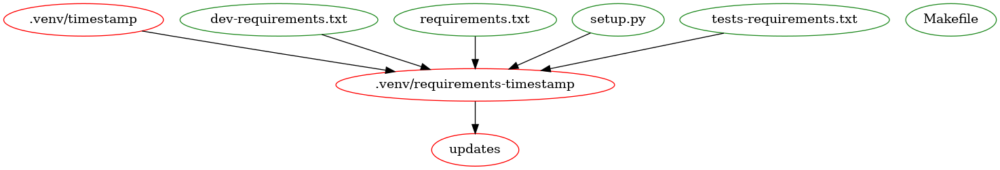
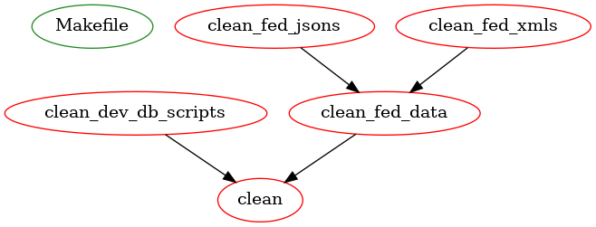
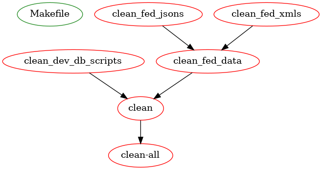

Makefile¶
pyramid_oereb uses GNU-Makefile a lot to setup itself and its components. This section is a try to
describe the structure of the used
Makefile.
A Makefile is constructed of so called targets. Most often a target represents a file which should be
created. So you the line defines
the commands how to create the development.ini file which is necessary to run DEV instance of
pyramid_oereb.
To stay with this line in the Makefile you can see that a mako-render command is called with several variables
from a virtual environment. Thats a bit interesting. More interesting is the dependency which is defined
right on the same line of the target: install
It refers to the install target
some lines above which has a
dependency requirements-timestamp which refers to a target
some lines above … and so forth.
Important to know is that GNU Make keeps track of target files. So if some change was made for instance to
your requirements.txt file to update a pypi package a simple make build is enough to setup your project
with it and provide it in your VENV. If you call make build for another reason and say the
requirements.txt file was not touched by you the complete targets which depend on this file are omitted.
This is a really powerful tool which - used correctly - can save a lot of work compared to write the same logic in a shell scripte or in a python script. In the best case it leads to reproducible environments independent of the machine it is issued on.
However, because it is a bit different how it works, people often struggle with its usage and avoid to use it at all.
The following sections should help you to understand better what the Makefile provides you when you call a decent target. It shows the dependency-target-system in a graph.
green elements are files which are expected to be there (e.g.
setup.py)red elements are files which will be created through the target or which are meta targets (“phony” - no files are created)
General targets¶
make install¶
Basically sets up your virtual environment based on the projects requirements.
make build¶
Completely sets up your application to be ready for running. This includes steps like:
prepare
development.inifileprepare DEV DB
fill DEV DB
…
Run a development server¶
make serve-dev¶
Runs a pserve development server which reloads when changes to python source files were made.
make serve¶
Runs a pserve development server.
Testing¶
make tests¶
Executes all python testing. This includes the module tests (they can be executed directly to save time).
make lint¶
Does the linting to check code style conformance.
make git-attributes¶
Executes the gitattributes checker.
make check¶
Collection target to execute all targets mentioned above in one single call.
Maintainence¶
make updates¶
Provides a list of outdated python packages and the possible better target version.
Documentation¶
make doc-html¶
Creates the documentation as a static HTML page with sphinx.
make doc-latex¶
Creates the documentation as a PDF page with sphinx.
Cleaning up¶
make clean¶
Wipes test results and development.ini file.
make clean-all¶
Completely wipes all setup files to provide green field for a new start.
